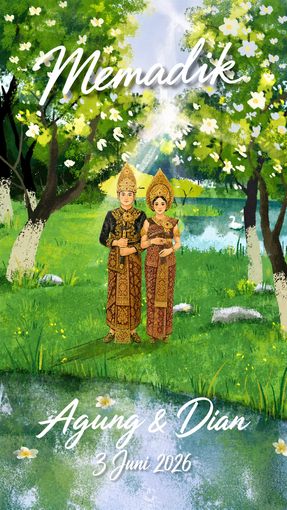
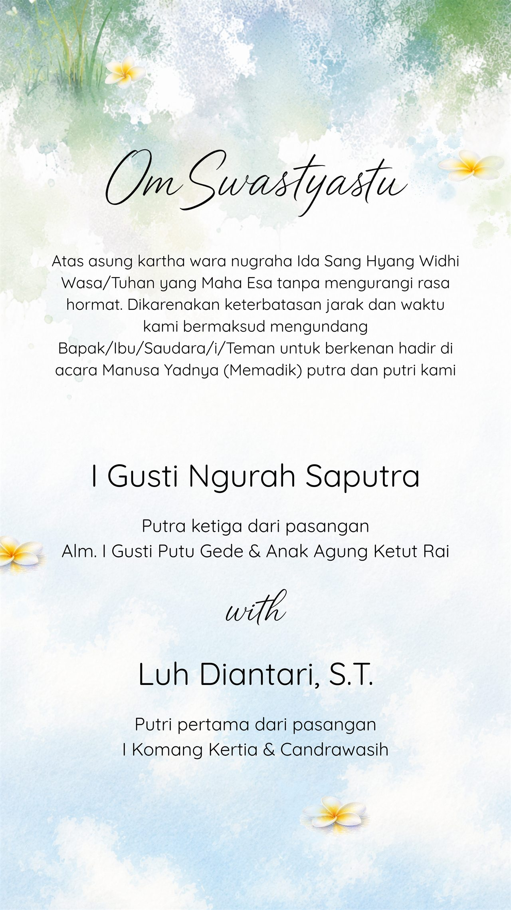
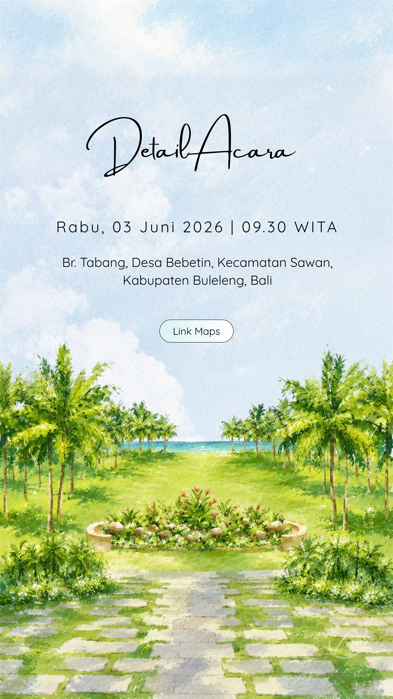

The Memadik of Agung and Dian

Pembuka dan Pasangan
Dengan penuh rasa hormat dan bahagia, kami mengundang Bapak/Ibu/Saudara/i untuk hadir dalam acara Memadik.
I Gusti Ngurah Saputra, anak ke-3 dari pasangan Alm. I Gusti Putu Gede dan Anak Agung Ketut Rai.
Luh Diantari, anak ke-1 dari pasangan I Komang Kertia dan Candrawasih.

Detail Acara Memadik
Hari dan tanggal: Rabu, 03.06.2026.
Waktu: 09.30 WITA.
Lokasi: Br. Tabang, Desa Bebetin, Kecamatan Sawan, Kabupaten Buleleng, Bali.